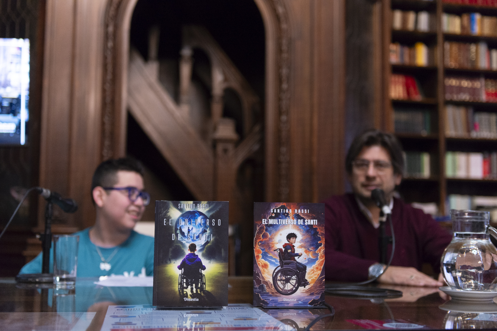
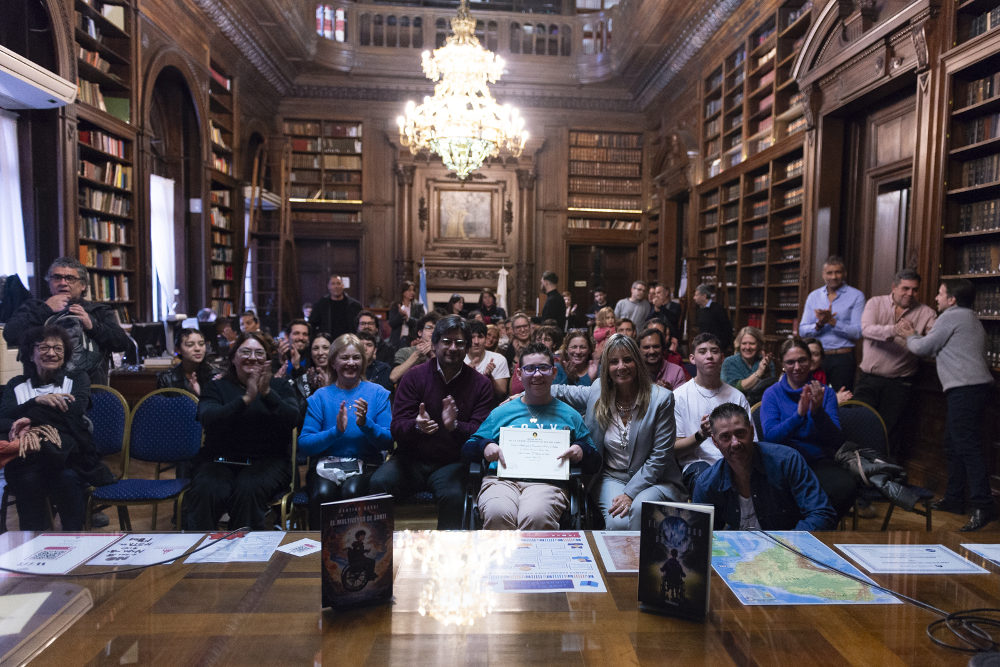
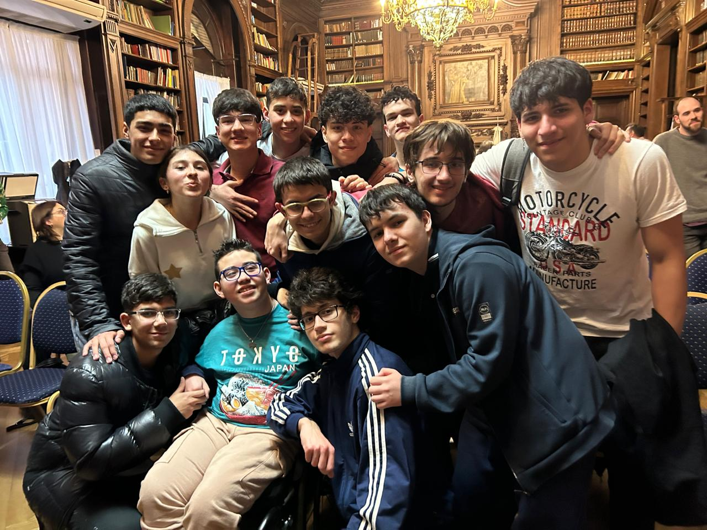
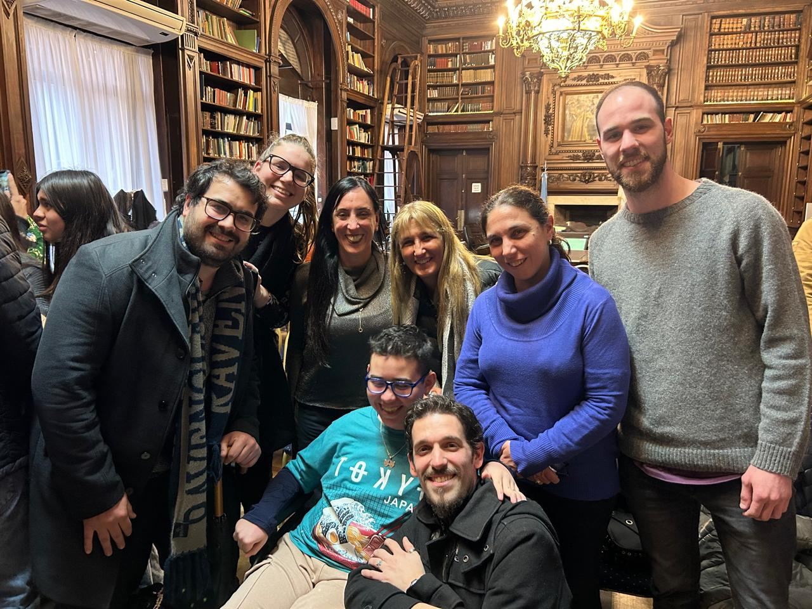
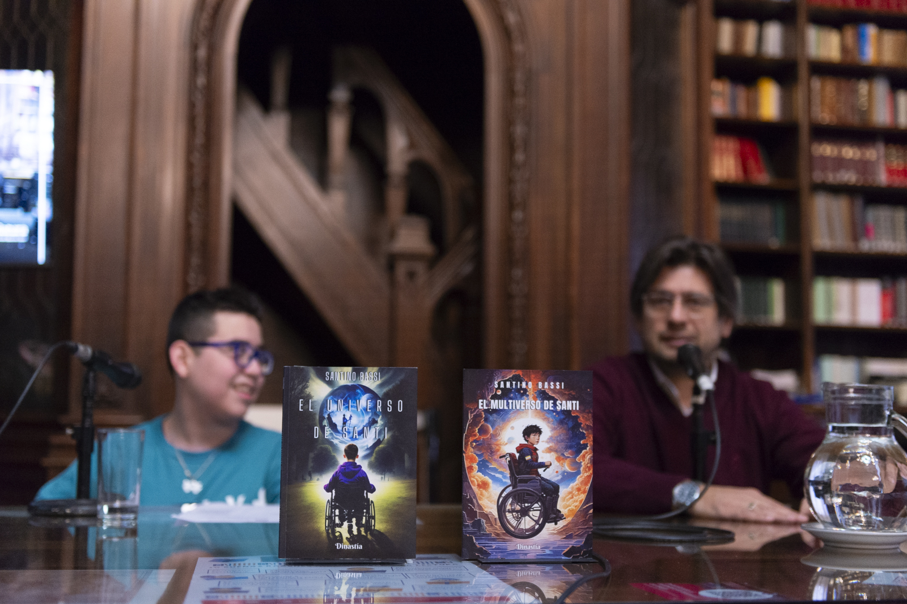
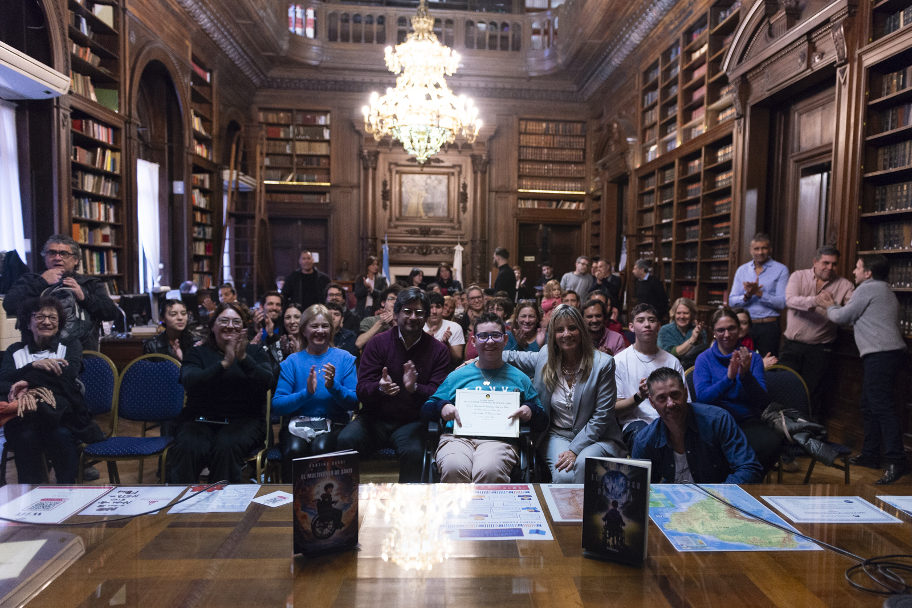
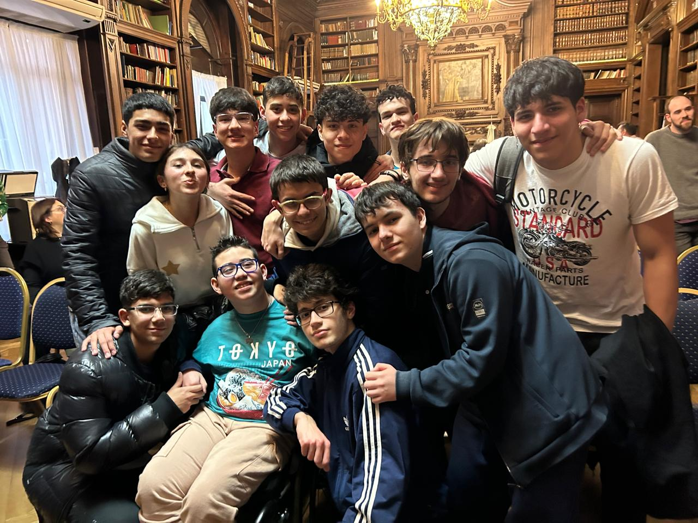
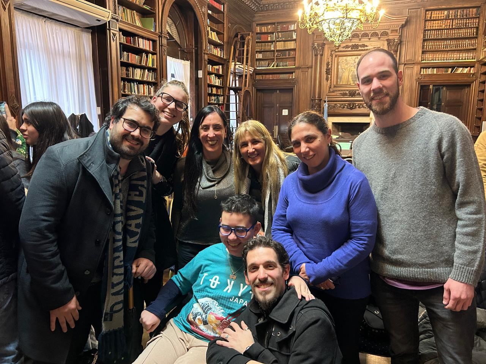

El libro “El universo de Santi” de Santino Bassi, nuestro amigo y compañero, fue declarado de interés cultural en la biblioteca de la Legislatura de la Ciudad Autónoma de Buenos Aires,
El diputado Alejandro Grillo estuvo presente en el evento y dijo: “ Lo que hace Santi con sus cuentos es echar luz a la oscuridad producida por la discriminación y los obstáculos”.
Santi estuvo acompañado por su familia, profesores y su banda de amigos.
Su hermano Maximo Bassi procedió a leer uno de sus cuentos llamado “El rey rezagado”, después de esto Santino nos dirigió algunas palabras emotivas e hizo un juramento.
Por último Santi nos dio souvenirs (un hermoso llavero) e hicimos taza taza cada uno a su casa…
En el siguiente link se puede ver el posteo del Diputado Alejandro Grillo en sus redes sociales.
Link al posteo
 






